Notice Board
कौन है श्री खाटू श्याम जी?
शास्त्रों के अनुसार, श्री खाटू श्याम जी का संबंध महाभारत काल से माना जाता है। वह पांडु पुत्र भीम के पौत्र थे। श्री खाटू श्याम जी काफी शक्तिशाली थे।
पौराणिक मान्यताओं के अनुसार, जब पांडव अपनी जान बचाते हुए एक वन से दूसरे वन घूम रहे थे, तो भीम का सामना हिडिंबा से हुआ। बाद में हिडिम्बा ने एक पुत्र को जन्म दिया जिसका नाम घटोत्कच रखा गया। बाद में घटोत्कच का एक पुत्र हुआ जिसकानाम बर्बरीक रखा गया।यही बर्बरीक आगे चलकर खाटू श्याम कहलाएं।
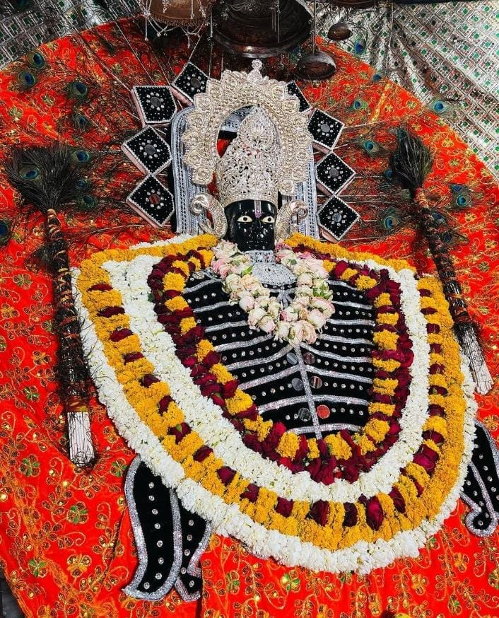
भगवान श्री कृष्ण ने दिया था ये वरदान
श्री खाटूश्याम जी की अपार शक्ति और क्षमता देकर भगवान श्री कृष्ण ने उन्हें कलयुग में अपने
नाम से पूजे जाने का वरदान दिया था। बर्बरीक अपनी शक्ति और क्षमता से हर किसी पर भारी पड़ जाता था। महाभारत के युद्ध के दौरान बर्बरीक ने भी हिस्सा लेने के लिए श्री कृष्ण से कहा। उन्होंने श्रीकृष्ण से पूछा कि वह किसकी
तरफ से लड़े, तो श्रीकृष्ण ने कहा कि जो पक्ष हारेगा वह उनकी तरफ से लड़ेगा। लेकिन श्रीकृष्ण युद्ध का परिणाम जानतेथे। ऐसे में श्रीकृष्ण ने बर्बरीक को रोकने के लिए उनके दान की मांग की और उसमें उनका सिर मांग लिया। बर्बरीक ने बिना देर किए अपना सिर उन्हें दान कर दिया। लेकिन बर्बरीक ने श्री कृष्ण से प्रार्थना की कि वो
पूरा महाभारत युद्ध देखना चाहते हैं। ऐसे में श्रीकृष्ण ने उनके शीश को एक ऊंची पहाड़ी में रख दिया जहां से ह पूरा युद्ध देख पाए। जब पांडव जीत गए तो सब आपस में लड़ने लगे कि
आखिर जीत का श्रेय किसे जाए। ऐसे में बर्बरीक ने कहा कि जीत का श्रेय श्रीकृष्ण को जाना चाहिए। बर्बरीक की ये बात सुनकर श्रीकृष्ण काफी खुश हुए और उन्हें कलयुग में खाटू श्याम जी के नाम से पूजे जाने का वरदान दे दिया।
1/13
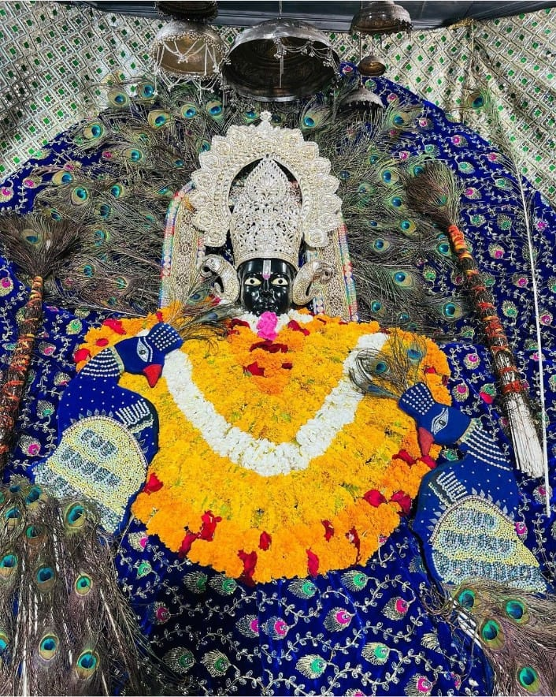
सबसे बड़ा तेरा दरबार है,
तू ही सब का पालनहार है ।
सजा दे या करदे क्षमा,
सांवरे तू ही हमारी सरकार है।।
।। जय श्री श्याम।।
2/13
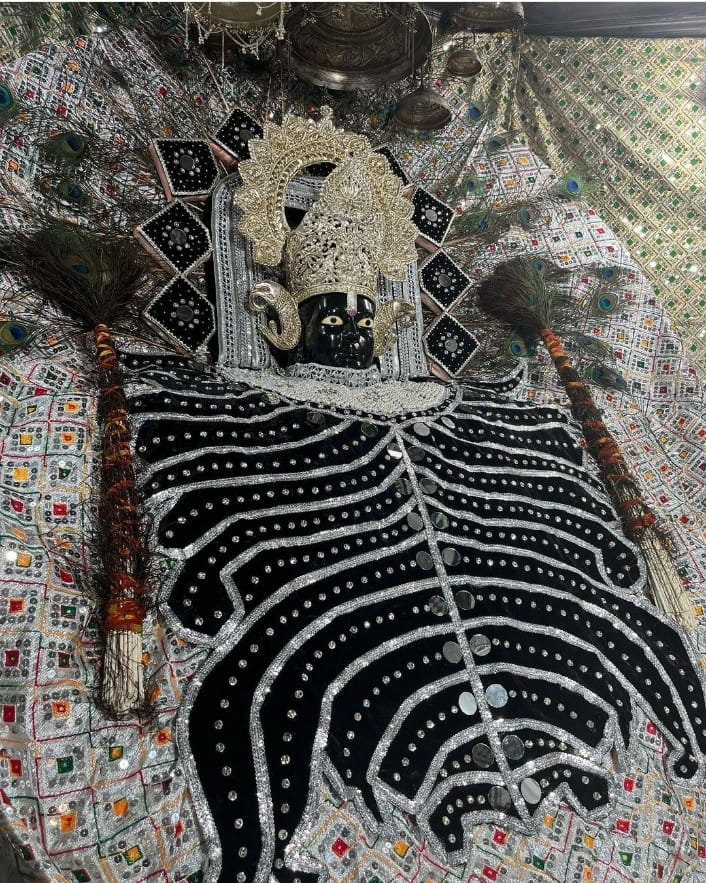
जब मुझे यकीन है कि कान्हा हमेशा मेरे साथ है,
तो इस से कोई फर्क नहीं पढ़ता कि कौन-कौन मेरे खिलाफ है।
।। जय श्री श्याम।।
3/13
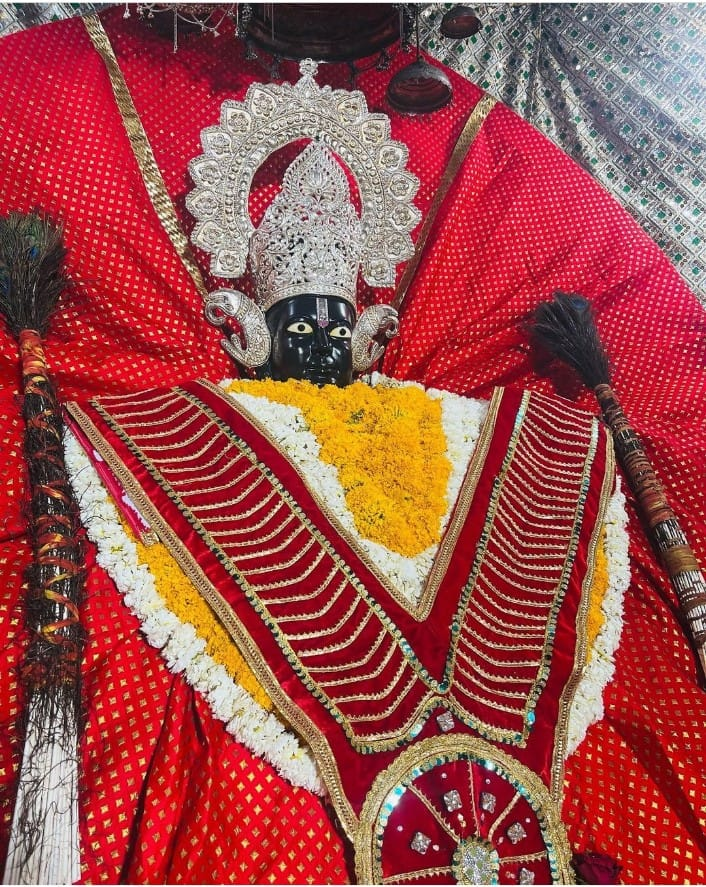
तमन्ना हो श्याम से मिलने की,
तो बंद आंखों में भी नजर आयेगें,
महसूस करने की कोशिश तो कीजिये
दूर होते हुये भी पास नजर आयेगें।
।। जय श्री श्याम।।
4/13
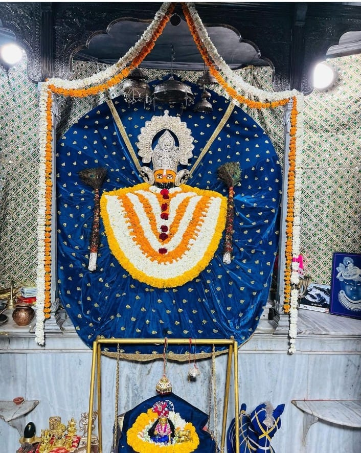
ना जोर चलेगा जमाने का, ना होड़ लगेगा हराने का
जब श्याम का हाथ हो सर पर तो कोई क्या बिगाड़ेगा इस दीवाने का
|| जय श्री श्याम * राधे – राधे ||
5/13
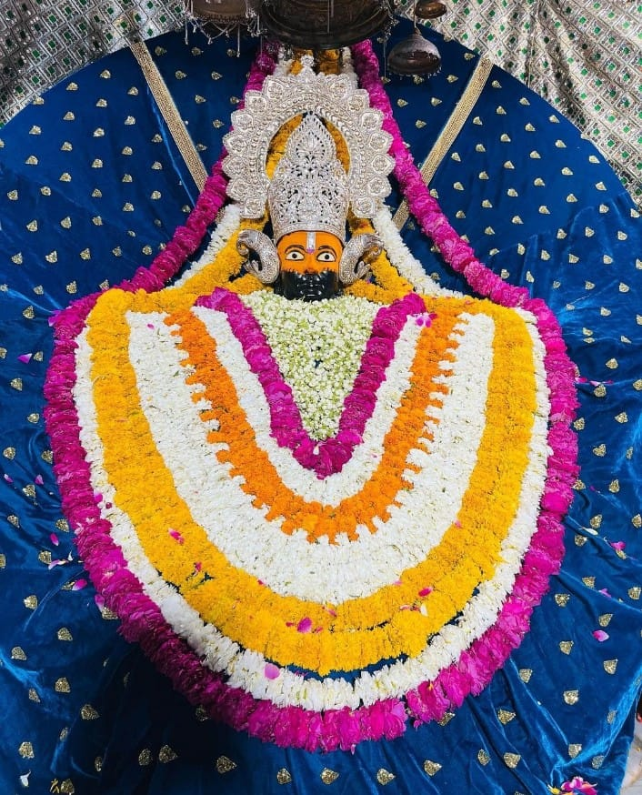
सपनों की मंजिल पास नहीं होती
जिन्दगी हर पल उदास नहीं होती
सांवरे पर यकीन रखना मेरे दोस्त,
कभी-कभी वो भी मिल जाता है जिसकी आस नहीं होती
।। जय श्री श्याम।।
6/13
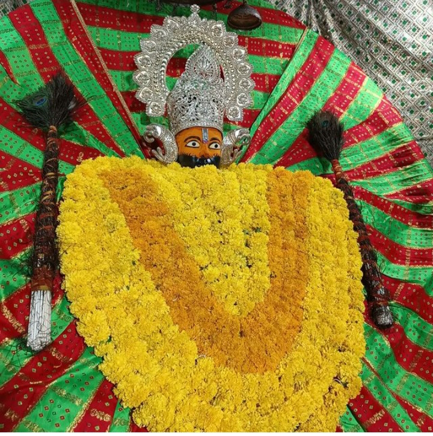
जब जब हूँ मैं बाबा हारा,
श्याम तूने दिया सहारा,
जब जब ना मिला किनारा,
श्याम तूने पार उतारा।
।। जय श्री श्याम।।
7/13
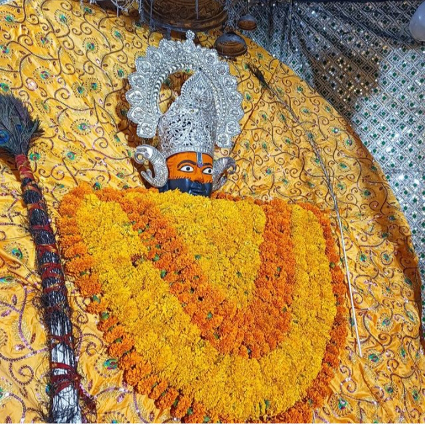
श्याम प्रभु के पीछे पड़ जा
ये चाहत रंग दिखलाएगी
प्रीत की डोरी बड़ी प्रबल होती है
ये श्याम से तुझे जरुर मिलाएगी
|| जय श्री श्याम * राधे – राधे ||
8/13
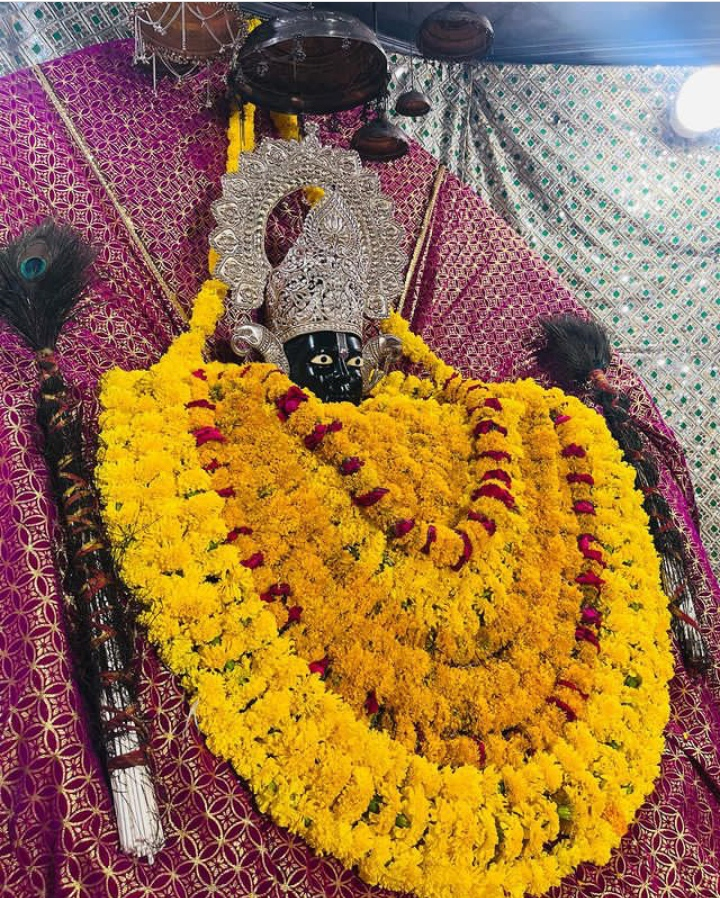
मत घबराना विपदा से, श्याम दीवानों घड़ी घड़ी।
तुझ पर आने से पहले, विपदा को हरले मोर छड़ी।।
।। जय श्री श्याम।।
9/13
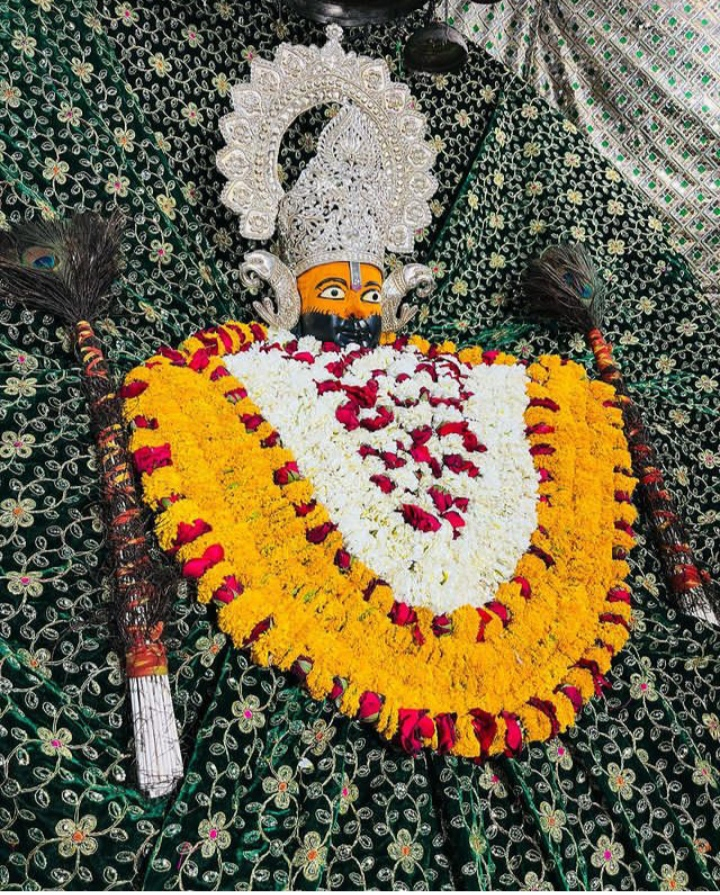
कली को रंग मिला, फूलों को निखार मिला
बहुत खुश नसीब हूँ मैं, जो मुझे श्याम का दरबार मिला
।। जय श्री श्याम।।
10/13
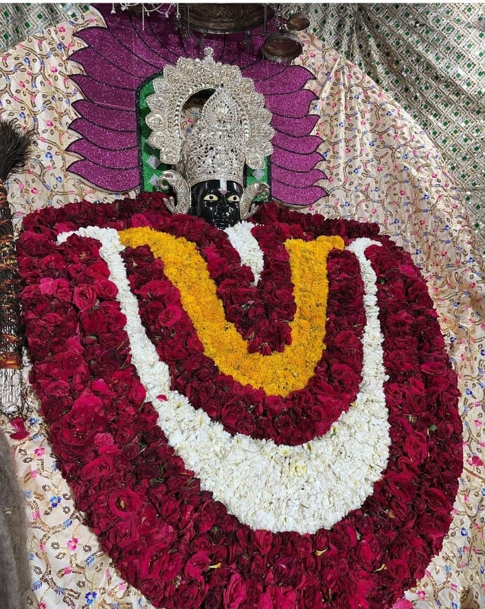
हाथों में ले श्याम ध्वजा,
मन में ले विश्वास,
लो चल चले हम खाटू धाम,
अब पूरे होगी आस।
।। जय श्री श्याम।।
11/13
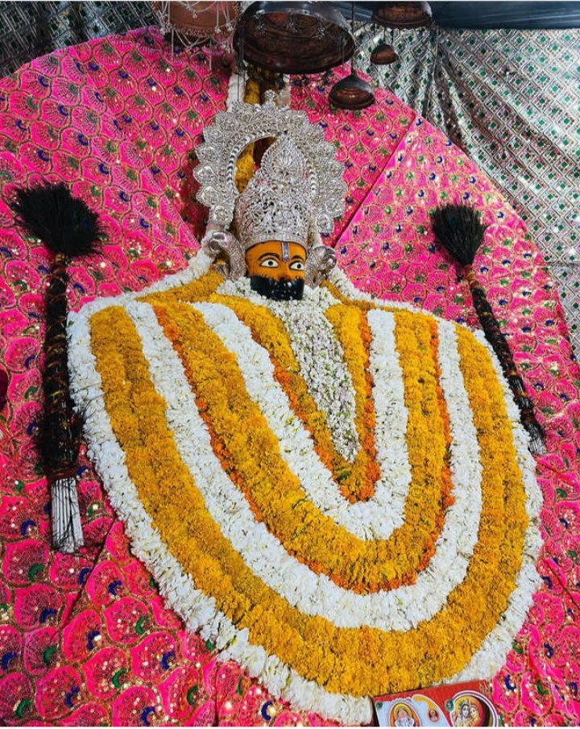
कोई कहता हैं कि सारा जमाना हैं मेरा,
किसी ने कहा,अपना भी बेगाना हैं मेरा,
कहता हैं कोई कुबेर का खजाना हैं मेरा,
पर मै कहता हु की श्याम के चरणों में ठिकाना हैं मेरा
|| जय श्री श्याम ||
12/13
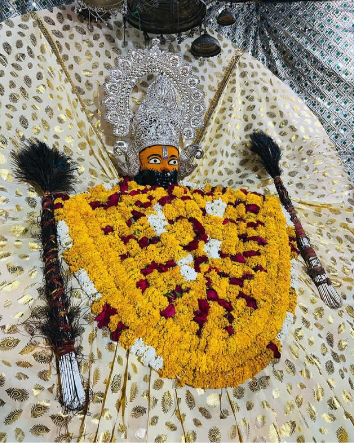
हारे का सहारा है ये, इससे ज्यादा कोई राज नहीं।
जिस के सिर पर हाथ हो इसका, इससे महंगा कोई ताज नहीं।।
।। जय श्री श्याम।।
13/13
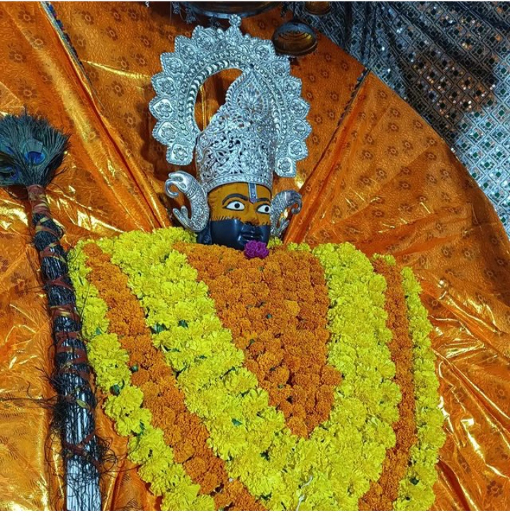
चन्दन हैं खाटू की माटी,
अमृत यहाँ का नीर,
ये दोनों जिसको मिल जाए,
बहुत बड़ी उसकी तकदीर।
।। जय श्री श्याम।।
❮
❯